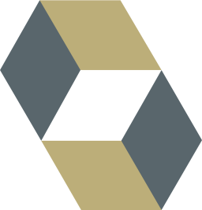
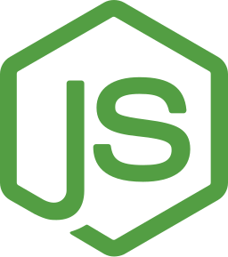
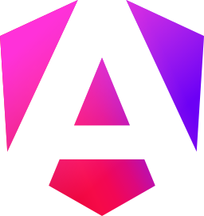
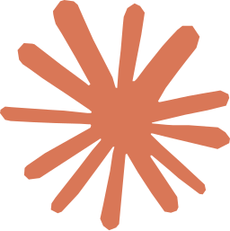
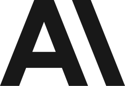

Llevé Visto Bueno a producción
Monolito modular multi-tenant en Spring Boot 4 y PostgreSQL, con deploy en un comando y rollback automático.
Backend en Java y Spring Boot, frontend en React y Angular, y operación en la nube con AWS, GCP y CI/CD. Cofundé Visto Bueno, un SaaS de alquileres, y construí servicios de pagos para la red Wepa en itti.
 7+ años de ingeniería, hoy también con IA · Liderazgo técnico · Inglés C1/C2
7+ años de ingeniería, hoy también con IA · Liderazgo técnico · Inglés C1/C2
Monolito modular multi-tenant en Spring Boot 4 y PostgreSQL, con deploy en un comando y rollback automático.
Servicios core de una red que procesa millones de transacciones por día, con pagos asíncronos en SQS y Lambda.
Desarrollo guiado por especificaciones para agentes de IA, con una revisión independiente de lo que construyen.
QA end-to-end de un sistema completo, generado con IA: más de 500 tests de Playwright.
Me especializo en desarrollo, arquitectura de microservicios, CI/CD, liderazgo técnico e ingeniería de software con agentes de IA.
Lideré arquitectura, ingeniería, despliegue y decisiones de tecnología de un SaaS para inmobiliarias, inquilinos, propietarios y portales.
2026Servicios core de pagos, deploys sin downtime, modernización del core legacy y mentoría con code reviews y pair programming.
2025 – 2026Liderazgo técnico de plataformas backend, microservicios y sistemas distribuidos, CI/CD y mentoría de equipos.
2022 – 2025Plataformas web clínicas y comerciales: análisis funcional, sistemas de gestión médica, testing e implementación.
2021 – 2022Generador de APIs RESTful integrado con GitHub, configuración DevOps e implementación en AWS.
2021 – 2022Sistema de ruteo y control de links, gestión de contenidos y metadatos sobre Google Cloud Platform.
2019 – 2021Backend
8
Hibernate
Node.jsTambién Express, Python, Go, C/C++
Frontend web
8
AngularTambién CSS3, React, Vue.js, Flutter/Dart
Bases de datos
10También H2, MongoDB, DynamoDB, CouchDB, Redis, Valkey
Cloud y DevOps
13También Jenkins, GitHub Actions, Caddy, Cloudflare, Sentry, AWS Lambda, Amazon SQS, AWS KMS, Kong
Testing y QA
4También CI/CD y tests unitarios
Ingeniería con IA
6
Claude Code
AnthropicTambién DeepSeek, Ollama, DevFlow, OpenSpec, QAFlow y revisión multiagente
Arquitectura
12Metodologías
5Ingeniero en Sistemas de Información, ingeniero de software senior y arquitecto. Diseño, modernizo y opero plataformas: de servicios de pagos fintech de alto volumen a un SaaS multi-tenant que cofundé y llevé a producción.
Persona con C.U.D. (Certificado Único de Discapacidad).
Habilidades blandas

Títulos
Universidad Tecnológica Nacional, Facultad Regional Mendoza. Especialización en desarrollo de software y análisis de sistemas.
2022Universidad Tecnológica Nacional, Facultad Regional Mendoza. Título intermedio de la carrera de Ingeniería.
2022Certificaciones
Idiomas